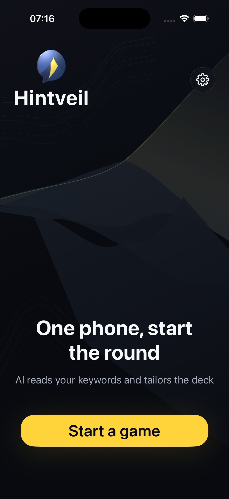

01 / 제시어 없는 모드
제시어는 몰라도, 당황하지 마세요.
다른 사람들은 비밀 제시어를 알고 있습니다. 라이어는 힌트를 듣고 추리해야 합니다. 너무 자신 있게 말하면 오히려 의심받을지도 몰라요.
얼굴을 마주하고 즐기는 추리 파티 게임
휴대폰 한 대와 친한 친구들. 애매한 힌트 한마디에 가장 친한 친구가 가장 수상해집니다. Hintveil에서 평범한 대화가 추리로 바뀝니다.
01 / 게임 방법
다른 사람들은 비밀 제시어를 알고 있습니다. 라이어는 힌트를 듣고 추리해야 합니다. 너무 자신 있게 말하면 오히려 의심받을지도 몰라요.
서로 비슷한 제시어를 받습니다. 자기 제시어만 보이고, 어느 편인지는 알 수 없습니다. 정말 같은 것을 이야기하고 있나요?

02 / HINTVEIL
인원, 모드, 덱을 선택하세요. 3~12명, iPhone 한 대면 됩니다. 회원가입은 필요 없어요.
차례대로 길게 눌러 확인하고 손을 떼면 숨겨집니다. 비밀을 지키며 다음 사람에게 건네세요.
힌트를 주고 어색한 설명을 찾아보세요. 함께 투표하면 진행자가 탈락자를 기록합니다. 승부가 날 때까지 계속하세요.
03 / AI
대학 동창 모임, 회사 친목 모임, 우리끼리만 아는 주제까지. 주제를 입력하면 AI가 이 자리에 맞는 덱을 만들어 줍니다. 추리는 여러분의 몫이에요.
기본 오프라인 게임과 기본 덱은 무료입니다. AI에는 활성 구독이 필요하며 무료 AI 체험은 제공하지 않습니다. 월 구독 기간에는 AI 덱을 만들고 수정할 수 있습니다. 짧은 시간 내 요청 빈도와 동시 처리에는 제한이 적용됩니다. 저장한 덱은 구독 종료 후에도 오프라인으로 플레이할 수 있습니다.
적당히 말하고 자연스럽게 섞이세요. 귀 기울여 듣고 빈틈을 찾으세요.
친구들이 모였다면 휴대폰을 건네세요. 기본 오프라인 게임은 무료이며 광고가 없습니다.
App Store에서 다운로드